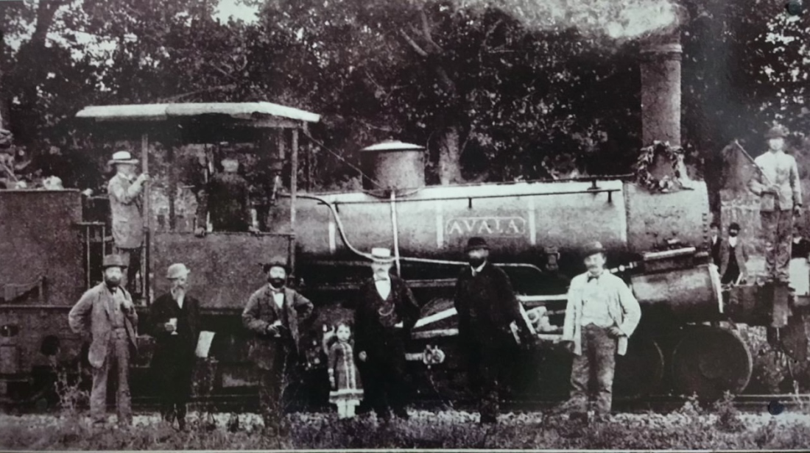
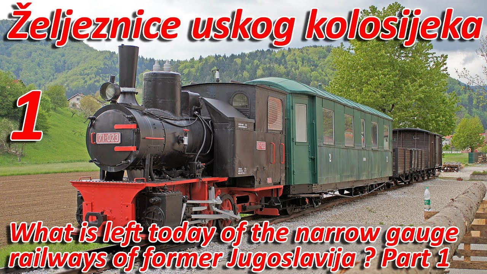

While there is no exact date for railroads appearing in Yugoslavia (Then Austria-Hungary), the earliest I could find was 1872, when Banja Luka was connected to Dobrljina. The line was standard gauge, but the line was very cheaply made, the wagons kept derailing, and all of the rolling stock was incredibly small. Furthermore, the passenger cars were just converted gondola cars with a roof. Nonetheless, the railroad operated for many years and recieved the distinction of being the first railroad in Bosnia. The engine you see below, Avala, is speculated to be one of the first engines in what would later become Yugoslavia. The picture was taken in 1881.
Following the creation of Yugoslavia, the railroads were all organized into one big entity, the Yugoslavian Railways. Because Yugoslavia was socialist, it was controlled by the government. Nonetheless, it was fairly well-maintained. However, one interesting fact about the JŽ was that their engines and rolling stock came from just about everywhere. Some came from Italy, some from Germany, but most were from Austria and Hungary. Needless to say, Yugoslavia was one of the most diverse railroads when it came to rolling stock. The JŽ ran until the breakup of Yugoslavia, when it would become numerous other railroads, such as the Hrvatski Željeznice (Croatian Railways).
